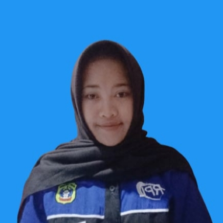

TENTANG
Website Kami Mencakup Beberapa Mata Pelajaran


DATA DIRI
Allysyyafitri K

Dina R
Rofiqi A.F
Website kolaborasi tentang pencemaran yang terjadi di lingkungan sekitar dan cara mengelolanya.
GET STARTEDWebsite Kami Mencakup Beberapa Mata Pelajaran
Allysyyafitri K
Dina R
Rofiqi A.F
Pengamatan dan analisis isu lingkungan serta membuat sebuah produk daur ulang atau Recycle guna mengurangi limbah pencemaran yang terjadi di lingkungan
Pencemaran lingkungan adalah masuknya zat berbahaya/ benda asing ke lingkungan yang menyebabkan kerusakan dan membahayakan makhluk hidup.
Untuk mengurangi limbah pencemaran bisa melalui pengelolaan (3R) Reduce, Reuse, Recycle
pencemaran air adalah perubahan keadaan di suatu tempat penampungan air seperti danau, sungai, lautan dan air tanah akibat aktivitas manusia
Pencemaran tanah adalah kondisi di mana tanah terkontaminasi oleh berbagai zat atau bahan yang dapat merusak kualitas tanah dan mengganggu keseimbangan ekosistem di dalamnya.
Pencemaran udara adalah kondisi di mana udara terkontaminasi oleh zat-zat berbahaya seperti gas buang kendaraan bermotor, asap pabrik, debu, dan partikel-partikel kecil lainnya.
Pencemaran lingkungan dapat dikurangi dengan penerapan prinsip 3R (Reduce, Reuse, Recycle). Dengan cara ini, sampah dapat berkurang, lingkungan tetap bersih, sehat, dan lebih lestari.
proses daur ulang plastik bekas menjadi pot bunga yang dilapisi tali rotan dan disangga oleh kawat pot-pot tersebut disusun dalam rangkaian bertingkat, sehingga bisa digunakan sebagai tempat menaruh tanaman hias.
Hasil kerajinan lampu hias yang terbuat dari barang bekas yaitu sendok plastik dan botol plastik. Sendok plastik dipotong bagian gagangnya, kemudian disusun rapi menyerupai sisik atau kelopak bunga di sekeliling botol plastik. Setelah itu, botol yang sudah ditempeli sendok diberi lampu di dalamnya sehingga menghasilkan cahaya berwarna-warni. Hasil akhir menyerupai lampion.
karya seni membuat miniatur pohon bonsai menggunakan kawat sebagai bahan utama. Biasanya digunakan kawat aluminium atau tembaga karena mudah dibentuk, tidak berkarat, dan tahan lama. Karya ini termasuk dalam kategori kerajinan tangan (handcraft) serta bisa menjadi hiasan rumah atau produk kreatif.
Rak ini berbentuk kotak dengan bagian depan miring sehingga buku, majalah, atau dokumen lebih mudah diambil. Fungsinya adalah untuk menyimpan buku agar lebih rapi di meja belajar atau meja kerja.
Kelompok saya memilih membuat "Bonsai dari Kawat" karena kelihatannya nilai jual lebih tinggi dan sangat menarik jika di pasarkan. Alasan lainnya karena bahan kawat mudah didapatkan di manapun dan jika dimanfaatkan akan lebih berguna dan menguntungkan.
Mendesain iklan bundling produk ramah lingkungan menggunakan konsep SPLTV
Bundling 1 (Rofiqi A.F)

Bundling 2 (Dina R)

Bundling 3 (Allysyyafitri K)

Persamaan 4
Persamaan 5
Hp = {(60.000 , 30.000 , 25.000)}
Persamaan 4
Hp = {(60.000 , 30.000 , 25.000)}
Persamaan 4
Persamaan 5
Hp = {(45.000 , 40.000 , 30.000)}
Menulis teks laporan hasil observasi secara logis dan sistematis
Limbah adalah suatu bahan atau barang bekas yang biasa dibuang karena sudah tak ternilai lagi. Limbah merupakan sisa dari suatu kegiatan atau suatu produksi. Limbah dapat menyebabkan pencemaran yang bisa membahayakan lingkungan. Limbah dibagi menjadi tiga yaitu limbah padat,cair dan gas. Limbah padat contohnya seperti plastik dan cair contohnya air cucian sedangkan gas adalah asap knalpot. Pada observasi kali ini saya akan menjelaskan tentang limbah kawat aluminium
Kawat ada beberapa jenis, yang merupakan limbah adalah kawat aluminium sebab kawat yang lain seperti tembaga bisa dijual dengan harga yang mahal. Nah kawat aluminium ini biasanya adalah hasil limbah yang berasal dari pengepulan barang bekas seperti kabel listrik bekas, perabotan rumah tangga lama dan komponen elektrik seperti dinamo. Kawat sering digunakan saat kontruksi dan industri.
Kawat aluminium mempunyai ciri-ciri fisik yang berbeda dengan kawat tembaga. Kawat aluminium mempunyai warna keperakan, lebih ringan dan lebih mudah patah sedangkan kawat tembaga mempunyai ciri-ciri warna merah kecoklatan, lebih berat dan lebih kuat. Kawat mempunyai bentuk panjang dan kecil yang mudah dibentuk
Ada banyak cara untuk mengurangi limbah salah satunya limbah padat yang dapat menyebabkan pencemaran tanah yaitu dengan memanfaatkan atau mendaur ulang seperti kawat menjadi bonsai yang bermanfaat menjadi hiasan meja, hiasan akuarium dan memperindah ruangan. Selain itu bonsai dari kawat bisa menjadi ide jualan yang bernilai tinggi. Dengan memanfaatkan limbah kawat menjadi bonsai, kita dapat menciptakan lingkungan yang positif dan dapat melatih kreativitas.
Limbah adalah suatu yang dihasilkan dari suatu proses, baik itu proses alam maupun kegiatan manusia, yang sudah tidak terpakai dan sudah dibuang karena dianggap tidak memiliki nilai guna. Limbah bisa berasal dari kegiatan rumah tangga, pertanian, industri, maupun pertambangan. Pada observasi kali ini saya akan menjelaskan tentang limbah kawat.
Limbah kawat adalah limbah yang berasal dari sisa potongan kawat atau kawat bekas yang berasal dari kegiatan konstruksi, industri maupun kerajinan yang sudah tidak terpakai lagi. Limbah kawat termasuk limbah anorganik karena terbuat dari logam seperti besi, baja, tembaga, atau aluminium yang sulit terurai secara alami. Limbah kawat masih bisa kita gunakan kembali, misalnya untuk kerajinan tangan seperti pot bonsai dan lain-lainnya.
Limbah kawat biasanya berupa potongan pendek, gulungan rusak, atau kawat yang sudah bengkok. Kawat memiliki sifat yang kuat, lentur, dan tahan lama tetapi sulit untuk terurai alami. Warna limbah kawat umumnya berwarna abu-abu perak atau kecokelatan jika sudah berkarat. Kawat memiliki permukaan yang keras.
Limbah kawat juga memiliki beragam manfaat. Salah satunya adalah dapat dimanfaatkan sebagai kerajinan tangan, seperti pot bonsai yang terbuat dari kawat. Dapat digunakan untuk menjadi hiasan meja, dan dapat melatih kesabaran dan kreativitas kita.
Limbah adalah sisa hasil dari suatu kegiatan atau proses produksi rumah tangga dari industri yang sudah tidak digunakan lagi. Limbah dibagi menjadi 2 jenis yaitu : Limbah organik, limbah yang dapat terurai secara alami oleh lingkungan. Limbah Anorganik, limbah yang sulit terurau atau bahkan tidak bisa terurai secara alami. Oleh karena itu limbah - limbah yang tidak dapat diurai memerlukan perhatian khusus dalam pengelolaannya agar tidak menimbulkan dampak negatif bagi lingkungan. Kali ini saya akan menjelaskan mengenai cara mengelola limbah kawat.
Limbah kawat adalah sisa kawat yang tidak digunakan lagi. Limbah ini bisa ditemukan dikegiatan industri, konstruksi pembangunan, perbengkelan, dan aktivitas rumah tangga lainya. jenis kawat yang menjadi limbah umumnya berbahan besi, logam, baja atau alumunium. Sedangkan limbah kawat termasuk dalam jenis limbah anorganik karena bahannya yang sulit terurai, dan jika dibiarkan terlalu lama akan menimbulkan hal - hal yang tidak diinginkan masyarakat.
Dampak negatif dari limbah kawat adalah dapat merusak keindahan lingkungan karena akan terlihat kotor dan tidak terawat, menimbulkan bahaya keselamatan jika dijalan, dan dapat merusak kerusakkan tanah atau air jika terkena karatnya. Selain itu ujung dari kawat yang tajam juga bisa melukai manusia maupun hewan, serta dapat memicu sumber penyakit.
Kita bisa memanfaatkan menjadi kerajinan tangan yang dapat menjadi sumber pengahasilan. Contoh kerajinannya seperti gantungan, dekorasi dinding, hiasan atau pajangan , pohon bonsai, dan lainya. Dengan cara ini limbah kawat akan membantu menjaga lingkungan, dengan cara memberi nilai ekonomi bagi masyarakat.
Menulis report text tentang isu lingkungan
Waste is a material or used item that is usually discarded because it is no longer valuable. Waste is the remainder of an activity or production process. Waste can cause pollution that can harm the environment. Waste is divided into three types: solid, liquid, and gaseous waste. Examples of solid waste include plastic, liquid waste includes washing water, and gaseous waste includes exhaust fumes. In this article, I will explain about aluminum wire waste.
There are several types of wire, but aluminum wire is a common waste product, as other types, such as copper, can be sold for a high price. Aluminum wire is typically a byproduct of collecting used goods such as used electrical cables, old household appliances, and electrical components like dynamos. Wire is often used in construction and industry.
Aluminum wire has different physical characteristics from copper wire. Aluminum wire has a silvery color, is lighter and breaks more easily, while copper wire has a brownish red color, is heavier and stronger. Wire has a long and small shape that is easy to shape
There are many ways to reduce waste, one of which is sol6id waste, which can cause soil pollution. This includes reusing or recycling wire into bonsai, which can be used as table decorations, aquarium decorations, and room beautification. Furthermore, wire bonsai can be a valuable business idea. By repurposing wire waste into bonsai, we can create a positive environment and foster creativity.
Waste is something produced by a process, whether natural or human, that is no longer used and discarded because it is deemed to have no value. Waste can come from household activities, agriculture, industry, or mining. In this article, I will explain about wire waste.
Wire waste is waste derived from scraps of wire or used wire from construction, industry, or crafts that are no longer used. Wire waste is considered inorganic waste because it is made of metals such as iron, steel, copper, or aluminum, which are difficult to decompose naturally. Wire waste can still be reused, for example, for crafts like bonsai pots and others.
Wire waste usually comes in the form of short pieces, damaged coils, or bent wire. Wire is strong, flexible, and durable, but it is difficult to decompose naturally. Wire waste is generally silver-gray or brownish when rusted. Wire has a hard surface.
Wire waste also has various uses. One example is its use in crafts, such as bonsai pots made from wire. It can be used as a table decoration and can train our patience and creativity.
Waste is the residual product of an activity or industrial or household production process that is no longer used. Waste is divided into two types: organic waste, which can decompose naturally in the environment. Inorganic waste, which is difficult to decompose or even impossible to decompose naturally. Therefore, non-decomposable waste requires special attention in its management to prevent negative impacts on the environment. This time, I will explain how to manage wire waste.
Wire waste is the remaining wire that is no longer used. This waste can be found in industrial activities, construction, workshops, and other household activities. The type of wire that becomes waste is generally made of iron, metal, steel, or aluminum. Wire waste, on the other hand, is classified as inorganic waste because it is difficult to decompose, and if left for too long, it can cause undesirable effects to the public.
The negative impacts of wire waste include damaging the environment because it looks dirty and unkempt, posing a safety hazard on the road, and damaging the soil or water if it rusts. Furthermore, the sharp ends of the wire can injure humans and animals and can trigger disease.
We can utilize it to make handicrafts that can generate income. Examples of these crafts include hangers, wall decorations, ornaments or displays, bonsai trees, and more. In this way, wire waste helps protect the environment by providing economic value to the community.
Hubungi kami sekarang.